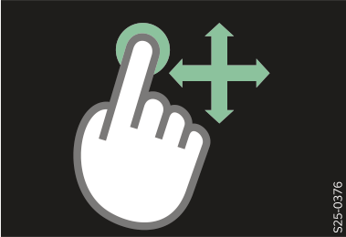
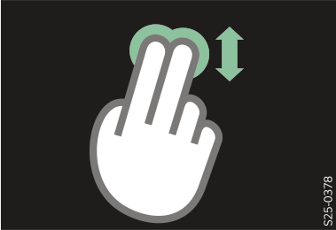
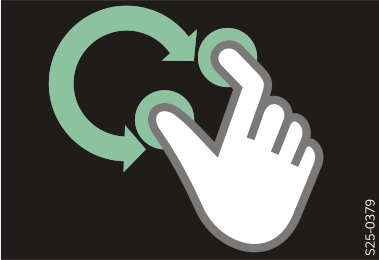
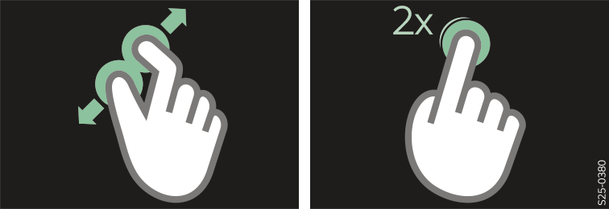
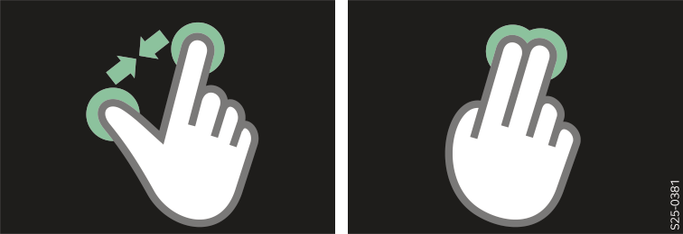
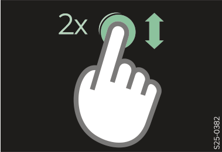

Appuyer deux fois sur l'écran et laisser le doigt sur l'écran la deuxième fois.
Pour effectuer un zoom avant sur la carte, déplacer le doigt vers le haut.
Pour effectuer un zoom arrière sur la carte, faire glisser votre doigt vers le bas.

Il est également possible d’effectuer un zoom avant/arrière sur la carte en déplaçant 2 doigts sur le curseur tactile sous l'écran d’infodivertissement.